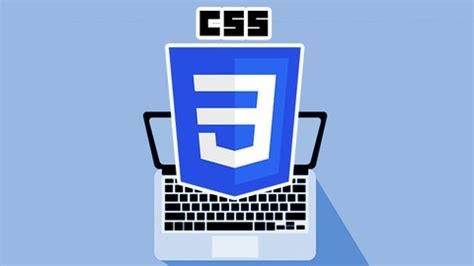

Technologies Used

Introduction to html
HTML stands for Hypertext Markup Language, and it is the most widely used language to write Web Pages.Hypertext refers to the way in which Web pages.
Read More

Introduction to CSS
CSS is short for Cascading Style Sheets, and is the preferred way for setting the look and feel of a website. Cascading Style Sheets (CSS) is a markup language
Read More
Introduction to JavaScript
JavaScript is a dynamic computer programming language. It is lightweight and most commonly used as a part of web pages, whose implementations
Read More
Introduction to Bootstrap
Bootstrap is a free and open-source CSS framework directed at responsive, mobile-first front-end web development. It contains CSS- and JavaScript-based
Read More